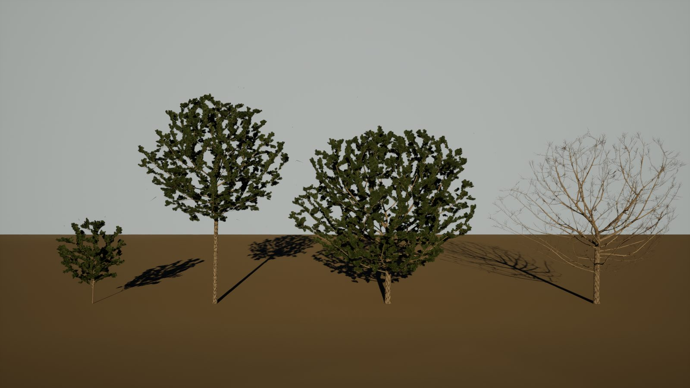

Trees · spec sheet
Post oak
Quercus stellata · Cross-shaped leaves; a gnarled round crown. Dry, poor uplands.
In films
0.7%Georgia basal area
0.4%North Carolina basal area
0.1%Western NC basal area

Leaf
Bark

Palette
SummerFall 1Fall 2Fall 3Fall 4
Season calendar
The leaf colour and cover the season engine draws on each day; ticks mark leaf-out, the start of the turn and of the drop.
Facts
- Leaf
- postoak · 12 cm · alternate
- Leaves a spray
- 14-20
- Leaf out
- Apr 5
- Turns
- Nov 1, over 25 days
- Drops
- Nov 21, over 40 days
- Bark preset
- whiteoak
- Built
- 9 trees
- Sprays a tree
- 1,757 (median)
- Limb triangles
- 22,068 (median)
- FIA code
- 835
- Stands in for
- Dwarf post oak
Forms
| Form | What | Height m | DBH cm | Crown base | Crown radius m | Crown envelope |
|---|---|---|---|---|---|---|
| Y | young, dry upland | 7.0 | 10 | 22% | 2.4 | ovoid |
| F | upland forest, crooked limbs | 17.0 | 35 | 40% | 4.6 | round |
| M | open-grown, gnarled | 14.0 | 50 | 18% | 6.5 | round |